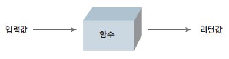
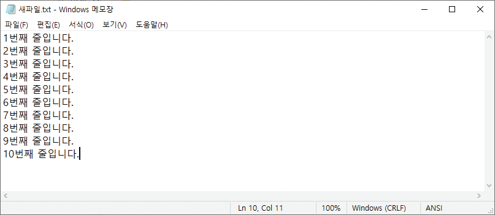
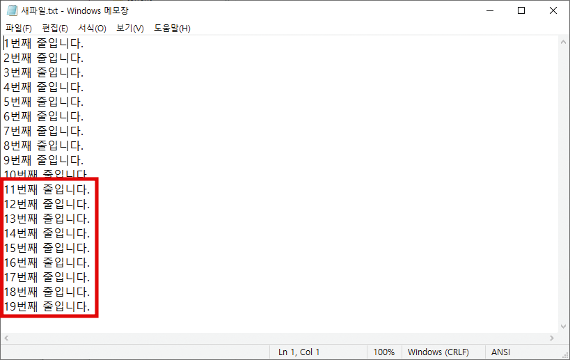
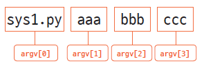

def 함수_이름(매개변수):
수행할_문장1
수행할_문장2
...이번 실습에서는 프로그램 입출력에 대한 기초에 대해서 학습 할 예정이다. 위성자료 및 지구환경과학 자료 입출력을 위한 필수 프로그래밍 코드 학습 과정이다.
강의자료를 VScode로 실행해보는법
- 미리 만들어놓은 강의자료 Github 링크 에서 강의자료는 다운로드 한다.
- Visual Studio Code를 실행한다.
- 파일 열기 혹은 소스코드 드레그 인을 통해 코딩 파일을 연다.
- 코딩 파일을 수행한다.
이 문서를 구글 Colab에서 쉽게 실행해보는 방법은
- 미리 만들어놓은 Colab 링크를 눌러 본 .ipynb 파일을 구글 Colab에서 바로 열 수 있다. 이때 구글에 로그인을 해야 한다.
- 아무 셀이나 선택한 후 Ctrl+Enter를 눌러 실행해보면 [경고: 이 노트는 Google에서 작성하지 않았습니다]라고 뜨는데 실행 전에 모든 런타임 재설정을 선택한 채로 무시하고 계속하기를 눌러준다.
모든 런타임 재설정이 뜰 텐데 예를 눌러준다.- 잠시 구글 서버의 배치가 되면서 우상단에 연결중 -> 초기화중 -> 연결됨이 뜨면서 실행이 가능한 상태가 된다.
구글 Colab에서 실습후 저장하는법
쉽게 실행보는법을 따라왔다면 Colab에서 임시 노트북으로 열리기 때문에 파일->드라이브로 저장을 눌러서 여러분의 구글 드라이브에 저장하거나 파일 -> .ipynb 다운로드를 눌러서 다운로드 해준다.
참고 사항
블록지정 ctrl + / : 여러줄 주석처리
다중 블럭 들여쓰기: 블록지정, Tab
다중 블럭 내어쓰기: 블록지정, Tab + shift
파이썬의 입출력
함수
함수란 무엇인가?
함수를 설명하기 전에 믹서를 생각해 보자.
우리는 믹서에 과일을 넣는다.
그리고 믹서를 사용해서 과일을 갈아 과일 주스를 만든다.
우리가 믹서에 넣는 과일은 ‘입력’, 과일 주스는 ’출력(결괏값)’이 된다.

믹서는 과일을 입력받아 주스를 출력하는 함수와 같다.
우리가 배우려는 함수가 바로 믹서와 비슷하다.
입력값을 가지고 어떤 일을 수행한 후 그 결과물을 내어 놓는 것이 바로 함수가 하는 일이다.
예를 들어 y = 2x + 3도 함수이다.
입력값(x)에 따라 출력값(y)이 변하는 함수
함수를 사용하는 이유는 무엇일까?
프로그래밍을 하다 보면 똑같은 내용을 반복해서 작성할 때가 종종 있다.
이때가 바로 함수가 필요한 때이다.
즉, 반복되는 부분이 있을 경우,
반복적으로 사용되는 가치 있는 부분을 한 뭉치로 묶어
어떤 입력값을 주었을 때 어떤 결괏값을 리턴해 준다’라는 식의 함수로 작성하는 것이다.
함수를 사용하는 또 다른 이유는 자신이 작성한 프로그램을 기능 단위의 함수로 분리해 놓으면
프로그램 흐름을 일목요연하게 볼 수 있기 때문이다.
마치 공장에서 원재료가 여러 공정을 거쳐 하나의 완제품이 되는 것처럼 프로그램에서도 입력한 값이 여러 함수를 거치면서 원하는 결괏값을 내는 것을 볼 수 있다.
이렇게 되면 프로그램 흐름도 잘 파악할 수 있고 오류가 어디에서 나는지도 쉽게 알아차릴 수 있다.
파이썬 함수의 구조
파이썬 함수의 구조는 다음과 같다.
def는 함수를 만들 때 사용하는 예약어이며, 함수 이름은 함수를 만드는 사람이 임의로 만들 수 있다.
함수 이름 뒤 괄호 안의 매개변수는 이 함수에 입력으로 전달되는 값을 받는 변수이다.
이렇게 함수를 정의한 후 if, while, for 문 등과 마찬가지로 함수에서 수행할 문장을 입력한다.
간단하지만 많은 것을 설명해 주는 다음 예를 살펴보자.
def add(a, b):
return a + b위 함수는 다음과 같이 풀이된다.
이 함수 이름은 add이고 입력으로 2개의 값을 받으며 리턴값(출력값)은 2개의 입력값을 더한 값이다.
여기에서 return은 함수의 결괏값(리턴값)을 리턴하는 명령어이다.
이제 직접 add 함수를 사용해 보자.
a = 7
b = 5
c = add(a, b) # add(3, 4)의 리턴값을 c에 대입
print(c)12# 빼기와 곱셈 함수를 직접 작성해보세요
def sub(a, b):
return a - b
def mul(a, b):
return a * b
a = 12
b = 4
c = mul(a, b)
print(c)48매개변수와 인수
매개변수(parameter)와 인수(arguments)는 혼용해서 사용하는 용어이므로 잘 기억해 두자.
매개변수는 함수에 입력으로 전달된 값을 받는 변수,
인수는 함수를 호출할 때 전달하는 입력값을 의미한다.
def add(a, b): # a, b는 매개변수
return a+b
print(add(3, 4)) # 3, 4는 인수7같은 의미를 가진 여러 가지 용어에 주의하자
프로그래밍을 공부할 때 어려운 부분 중 하나가 용어의 혼용이라고 할 수 있다.
우리는 공부하면서 원서를 보기도 하고 누군가의 번역본을 보기도 하면서 의미는 같지만 표현이 다른 용어를 자주 만나게 된다.
한 예로 입력값을 다른 말로 함수의 인수, 파라미터, 매개변수 등으로 말하기도 하고,
함수의 리턴값을 결괏값, 출력값, 반환값, 돌려 주는 값 등으로 말하기도 한다.
이렇듯 많은 용어가 여러 가지 다른 말로 표현되지만 의미는 동일한 경우가 많다.
입력값과 리턴값에 따른 함수의 형태
함수는 들어온 입력값을 받은 후 어떤 처리를 하여 적절한 값을 리턴해 준다.

함수의 형태는 입력값과리턴값의 존재 유무에 따라 4가지 유형으로 나뉜다.
일반적인 함수
입력값이 있고 리턴값이 있는 함수가 일반적인 함수이다.
앞으로 여러분이 프로그래밍을 할 때 만들 함수는 대부분 다음과 비슷한 형태일 것이다.
def 함수_이름(매개변수):
수행할_문장
...
return 리턴값다음은 일반적인 함수의 전형적인 예이다.
def add(a, b):
result = a + b
return result# 위의 코드를 동일하게 작성 연습해보세요.
# 빼기, 나머지 출력
def sub
def muladd 함수는 2개의 입력값을 받아 서로 더한 결괏값을 리턴한다.
이 함수를 사용하는 방법은 다음과 같다.
입력값으로 3과 4를 주고 리턴값을 받아 보자.
a = add(3, 4)
print(a)7이처럼 입력값과 리턴값이 있는 함수의 사용법을 정리하면 다음과 같다.
리턴값을_받을_변수 = 함수_이름(입력_인수1, 입력_인수2, ...)
입력값이 없는 함수
입력값이 없는 함수가 존재할까?
당연히 존재한다.
다음과 같이 작성해 보자.
def say():
return 'Hi' say라는 이름의 함수를 만들었다.
그런데 매개변수 부분을 나타내는 함수 이름 뒤의 괄호 안이 비어 있다.
이 함수는 어떻게 사용하는 것일까?
a = say()
print(a)Hi이처럼 입력값이 없고 리턴값만 있는 함수는 다음과 같이 사용한다.
리턴값을_받을_변수 = 함수_이름()
리턴값이 없는 함수
리턴값이 없는 함수 역시 존재한다.
다음 예를 살펴보자.
def add(a, b):
print("%d, %d의 합은 %d입니다." % (a, b, a+b))c = add(7,7)7, 7의 합은 14입니다.
None즉, 리턴값이 없는 함수는 다음과 같이 사용한다.
함수_이름(입력_인수1, 입력_인수2, ...)
아마도 여러분은 ’3, 4의 합은 7입니다.’라는 문장을 출력했는데 왜 리턴값이 없다는 것인지 의아하게 생각할 수도 있다.
이 부분을 초보자들이 혼란스러워하는데, print 문은 함수의 구성 요소 중 하나인 ’수행할_문장’에 해당하는 부분일 뿐이다.
리턴값은 당연히 없다.
리턴값은 오직 return 명령어로만 돌려받을 수 있다.
이를 확인해 보자.
리턴받을 값을 a 변수에 대입하고 a 값을 출력해 보면 리턴값이 있는지, 없는지 알 수 있다.
a = add(3, 4)
print(f'a는 {a}과 같습니다.')3, 4의 합은 7입니다.
a는 None과 같습니다.a 값으로 None이 출력되었다.
None이란 ’거짓을 나타내는 자료형’이다.
add 함수처럼 리턴값이 없을 때 a = add(3, 4)처럼 쓰면 함수 add는 리턴값으로 a 변수에 None을 리턴한다.
None을 리턴한다는 것은 리턴값이 없다는 것이다.
입력값도, 리턴값도 없는 함수
입력값도, 리턴값도 없는 함수 역시 존재한다.
다음 예를 살펴보자.
def say():
print('Hi')입력 인수를 받는 매개변수도 없고 return 문도 없으니 입력값도, 리턴값도 없는 함수이다.
a = say()
print(a)Hi
None매개변수를 지정하여 호출하기
함수를 호출할 때 매개변수를 지정할 수도 있다.
다음 예를 살펴보자.
def sub(a, b):
return a - b2개의 숫자를 입력받은 후 첫 번째 수에서 두 번째 수를 뺄셈하여 리턴하는 sub 함수이다.
이 함수는 다음과 같이 매개변수를 지정하여 사용할 수 있다.
result = sub(a=7, b=3) # a에 7, b에 3을 전달
print(result)4매개변수를 지정하면 다음과 같이 순서에 상관없이 사용할 수 있다는 장점이 있다.
result = sub(b=5, a=3) # b에 5, a에 3을 전달
print(result)-2입력값이 몇 개가 될지 모를 때는 어떻게 해야 할까?
입력값이 여러 개일 때 그 입력값을 모두 더해 주는 함수를 생각해 보자.
하지만 몇 개가 입력될지 모를 때는 어떻게 해야 할까?
아마도 난감할 것이다.
파이썬은 이런 문제를 해결하기 위해 다음과 같은 방법을 제공한다.
def 함수_이름(*매개변수):
수행할_문장
...일반적으로 볼 수 있는 함수 형태에서 괄호 안의 매개변수 부분이 *매개변수로 바뀌었다.
여러 개의 입력값을 받는 함수 만들기
다음 예를 통해 여러 개의 입력값을 모두 더하는 함수를 직접 만들어 보자.
예를 들어 add_many(1, 2)이면 3, add_many(1, 2, 3)이면 6, add_many(1, 2, 3, 4, 5, 6, 7, 8, 9, 10)이면 55를 리턴하는 함수를 만들어 보자.
def add_many(*args):
result = 0
for i in args:
result = result + i # *args에 입력받은 모든 값을 더한다.
return result 위에서 만든 add_many 함수는 입력값이 몇 개이든 상관없다.
*args처럼 매개변수 이름 앞에 *을 붙이면 입력값을 전부 모아 튜플로 만들어 주기 때문이다.
만약 add_many(1, 2, 3)처럼 이 함수를 쓰면 args는 (1, 2, 3)이 되고
add_many(1, 2, 3, 4, 5, 6, 7, 8, 9, 10)처럼 쓰면 args는 (1, 2, 3, 4, 5, 6, 7, 8, 9, 10)이 된다.
여기에서 *args는 임의로 정한 변수 이름이다.
*pey, *python처럼 아무 이름이나 써도 된다.
args는 인수를 뜻하는 영어 단어 arguments의 약자이며 관례적으로 자주 사용한다.
작성한 add_many 함수를 다음과 같이 사용해 보자.
result = add_many(1,2,3, 4, 5)
print(result)15result = add_many(1,2,3,4,5,6,7,8,9,10)
print(result)55add_many(1, 2, 3)으로 함수를 호출하면 6을 리턴하고
add_many(1, 2, 3, 4, 5, 6, 7, 8, 9, 10)으로 함수를 호출하면 55를 리턴하는 것을 확인할 수 있다.
여러 개의 입력을 처리할 때 def add_many(*args)처럼 함수의 매개변수로 *args 하나만 사용할 수 있는 것은 아니다.
다음 예를 살펴보자.
def add_mul(choice, *args):
if choice == "add": # 매개변수 choice에 "add"를 입력받았을 때
result = 0
for i in args:
result = result + i
elif choice == "mul": # 매개변수 choice에 "mul"을 입력받았을 때
result = 1
for i in args:
result = result * i
return result add_mul 함수는 여러 개의 입력값을 의미하는 *args 매개변수 앞에 choice 매개변수가 추가되어 있다.
result = add_mul('add', 1,2,3,4,5)
print(result)15result = add_mul('mul', 1,2,3,4,5)
print(result)120매개변수 choice에 add가 입력된 경우 *args에 입력되는 모든 값을 더해서 15를 리턴하고
mul이 입력된 경우 *args에 입력되는 모든 값을 곱해 120을 리턴한다.
# 위의 코드에서 빼기와 나머지를 출력하는 함수를 만들어보자
# 나머지는 전체합에서 최대값을 나누는 프로그램으로 작성해보자키워드 매개변수, kwargs
이번에는 키워드 매개변수에 대해 알아보자.
키워드 매개변수를 사용할 때는 매개변수 앞에 별 2개(**)를 붙인다.
역시 이것도 예제로 알아보자.
먼저 다음과 같은 함수를 작성해 보자.
def print_kwargs(**kwargs):
print(kwargs)print_kwargs는 입력받은 매개변수 kwargs를 출력하는 단순한 함수이다.
이제 이 함수를 다음과 같이 사용해 보자.
print_kwargs(a=1){'a': 1}print_kwargs(name='foo', age=3){'name': 'foo', 'age': 3}함수의 입력값으로 a=1이 사용되면 kwargs는 {‘a’: 1}이라는 딕셔너리가 되고
입력값으로 name=‘foo’, age=3이 사용되면 kwargs는 {‘age’: 3, ‘name’: ‘foo’}라는 딕셔너리가 된다.
즉, **kwargs처럼 매개변수 이름 앞에 **을 붙이면 매개변수 kwargs는 딕셔너리가 되고
모든 Key=Value 형태의 입력값이 그 딕셔너리에 저장된다는 것을 알 수 있다.
kwargs는 keyword arguments의 약자이며 args와 마찬가지로 관례적으로 사용한다.
함수의 리턴값은 언제나 하나이다
먼저 다음 함수를 만들어 보자.
def add_and_mul(a,b):
return a+b, a*b리턴값은 a+b와 a*b인데, 리턴값을 받아들이는 변수는 result 하나만 쓰였으므로 오류가 발생하지 않을까?
당연한 의문이다.
하지만 오류는 발생하지 않는다
그 이유는 함수의 리턴값은 2개가 아니라 언제나 1개라는 데 있다.
add_and_mul 함수의 리턴값 a+b와 a*b는 튜플값 하나인 (a+b, a*b)로 리턴된다.
따라서 result 변수는 다음과 같은 값을 가지게 된다.
Return으로 받게될 변수 (튜플)
result = (7, 12)
만약 이 하나의 튜플 값을 2개의 값으로 분리하여 받고 싶다면 함수를 다음과 같이 호출하면 된다.
result1, result2 = add_and_mul(3, 4)print(result1, result2)7 12또 다음과 같은 의문이 생길 수도 있다.
def add_and_mul(a,b):
return a+b
return a*b 위와 같이 return 문을 2번 사용하면 2개의 리턴값을 돌려 주지 않을까?
하지만 기대하는 결과는 나오지 않는다.
result = add_and_mul(2, 3)
print(result)5add_and_mul(2, 3)의 리턴값은 5 하나뿐이다.
두 번째 return 문인 return a * b는 실행되지 않았다는 뜻이다.
즉, 함수는 return 문을 만나는 순간, 리턴값을 돌려 준 다음 함수를 빠져나가게 된다.
return의 또 다른 쓰임새
특별한 상황일 때 함수를 빠져나가고 싶다면 return을 단독으로 써서 함수를 즉시 빠져나갈 수 있다.
다음 예를 살펴보자.
def say_nick(nick):
if nick == "바보":
return
print("나의 별명은 %s 입니다." % nick)위는 매개변수 nick으로 별명을 입력받아 출력하는 함수이다.
이 함수 역시 리턴값은 없다.
이때 문자열을 출력한다는 것과 리턴값이 있다는 것은 전혀 다른 말이므로 혼동하지 말자.
함수의 리턴값은 오로지 return 문에 의해서만 생성된다.
만약 입력값으로 ’바보’라는 값이 들어오면 문자열을 출력하지 않고 함수를 즉시 빠져나간다.
say_nick('천재')나의 별명은 천재 입니다.say_nick('바보')매개변수에 초기값 미리 설정하기
이번에는 조금 다른 형태로 함수의 인수를 전달하는 방법에 대해서 알아보자.
다음은 매개변수에 초기값을 미리 설정해 주는 경우이다.
def say_myself(name, age, man=True):
print("나의 이름은 %s 입니다." % name)
print("나이는 %d살입니다." % age)
if man:
print("남자입니다.")
else:
print("여자입니다.")위 함수를 보면 매개변수가 name, age, man=True이다.
그런데 낯선 것이 나왔다.
man=True처럼 매개변수에 미리 값을 넣어 준 것이다.
이것이 바로 함수의 매개변수에 초기값을 설정하는 방법이다.
say_myself 함수는 다음처럼 2가지 방법으로 사용할 수 있다.
say_myself("박응용", 27)나의 이름은 박응용 입니다.
나이는 27살입니다.
남자입니다.say_myself("박응용", 27, True)나의 이름은 박응용 입니다.
나이는 27살입니다.
남자입니다.이제 초깃값이 설정된 부분을 False로 바꿔 호출해 보자.
say_myself("박응선", 27, False)나의 이름은 박응선 입니다.
나이는 27살입니다.
여자입니다.man 변수에 False 값이 대입되어 다음과 같은 결과가 출력된다.
함수의 매개변수에 초깃값을 설정할 때 주의할 것이 하나 있다.
만약 위에서 살펴본 say_myself 함수를 다음과 같이 만들면 어떻게 될까?
def say_myself(name, man=True, age):
print("나의 이름은 %s 입니다." % name)
print("나이는 %d살입니다." % age)
if man:
print("남자입니다.")
else:
print("여자입니다.")Cell In[57], line 1 def say_myself(name, man=True, age): ^ SyntaxError: non-default argument follows default argument
이전 함수와 바뀐 부분은 초깃값을 설정한 매개변수의 위치이다.
결론을 미리 말하면 이것은 함수를 실행할 때 오류가 발생한다.
오류 메시지는 초깃값이 없는 매개변수(age)는 초깃값이 있는 매개변수(man) 뒤에 사용할 수 없다라는 뜻이다
즉, 매개변수로 (name, age, man=True)는 되지만, (name, man=True, age)는 안 된다는 것이다.
초기화하고 싶은 매개변수는 항상 뒤쪽에 놓아야 한다는 것 을 잊지 말자.
# 위의 코드에서 키와 몸무게, 그리고 지역이 전북 거주 여부인지를 리턴하는 함수를 작성해보자.함수 안에서 선언한 변수의 효력 범위
함수 안에서 사용할 변수의 이름을 함수 밖에서도 동일하게 사용한다면 어떻게 될까?
다음 예를 살펴보자.
a = 1
def vartest(a):
a = a +1
vartest(a)
print(a)1먼저 a라는 변수를 생성하고 1을 대입했다.
그리고 입력으로 들어온 값에 1을 더해 주고 결괏값은 리턴하지 않는 vartest 함수를 선언했다.
그리고 vartest 함수에 입력값으로 a를 주었다. 마지막으로 a의 값을 print(a)로 출력했다.
과연 어떤 값이 출력될까?
vartest 함수에서 매개변수 a의 값에 1을 더했으므로 2가 출력될 것 같지만,
프로그램 소스를 작성해서 실행해 보면 결괏값은 1이 나온다.
그 이유는 함수 안에서 사용하는 매개변수는 함수 안에서만 사용하는 함수만의 변수이기 때문이다.
즉, def vartest(a)에서 입력값을 전달받는 매개변수 a는 함수 안에서만 사용하는 변수일 뿐,
함수 밖의 변수 a와는 전혀 상관없다는 뜻이다.
따라서 vartest 함수는 다음처럼 매개변수 이름을 hello로 바꾸어도 이전의 vartest 함수와 완전히 동일하게 동작한다.
def vartest(hello):
hello = hello + 1즉, 함수 안에서 사용하는 매개변수는 함수 밖의 변수 이름과는 전혀 상관없다는 뜻이다.
# vartest_error.py
def vartest(a):
a = a + 1
vartest(3)
print(a)1위 프로그램 소스를 에디터로 작성해서 실행하면 어떻게 될까?
오류가 발생할 것이라고 생각한 학생은 모든 것을 이해한 독자이다.
vartest(3)을 수행하면 vartest 함수 안에서 a는 4가 되지만,
함수를 호출하고 난 후 print(a) 문장은 오류가 발생하게 된다.
그 이유는 print(a)에서 사용한 a 변수는 어디에도 선언되지 않았기 때문이다.
다시 한번 말하지만, 함수 안에서 선언한 매개변수는 함수 안에서만 사용될 뿐, 함수 밖에서는 사용되지 않는다.
이것을 이해하는 것은 매우 중요하다.
함수 안에서 함수 밖의 변수를 변경하는 방법
그렇다면 vartest라는 함수를 사용해서 함수 밖의 변수 a를 1만큼 증가할 수 있는 방법은 없을까?
이 질문에는 2가지 해결 방법이 있다.
1. return 사용하기
a = 1
def vartest(a):
a = a +1
return a
a = vartest(a)
print(a)2첫 번째 방법은 return을 사용하는 방법이다.
vartest 함수는 입력으로 들어온 값에 1을 더한 값을 리턴하도록 변경했다.
따라서 a = vartest(a)라고 작성하면 a에는 vartest 함수의 리턴값이 대입된다.
여기에서도 물론 vartest 함수 안의 a 매개변수는 함수 밖의 a와는 다른 것이다.
2. global 명령어 사용하기
a = 1
def vartest():
global a
a = a+1
vartest()
print(a)2두 번째 방법은 global 명령어를 사용하는 방법이다.
위 예에서 볼 수 있듯이 vartest 함수 안의 global a 문장은 함수 안에서 함수 밖의 a 변수를 직접 사용하겠다는 뜻이다.
하지만 프로그래밍을 할 때 global 명령어는 사용하지 않는 것이 좋다.
함수는 독립적으로 존재하는 것이 좋기 때문이다.
외부 변수에 종속적인 함수는 그다지 좋은 함수가 아니다.
따라서 되도록 global 명령어를 사용하는 이 방법은 피하고 첫 번째 방법을 사용하기를 권한다.
lambda 예약어
lambda는 함수를 생성할 때 사용하는 예약어 로, def와 동일한 역할을 한다.
보통 함수를 한 줄로 간결하게 만들 때 사용한다.
우리말로는 ’람다’라고 읽고 def를 사용해야 할 정도로 복잡하지 않거나 def를 사용할 수 없는 곳에 주로 쓰인다.
함수_이름 = lambda 매개변수1, 매개변수2, ... : 매개변수를_이용한_표현식한번 직접 만들어 보자.
add = lambda a, b: a+b
result = add(3, 4)
print(result)7lambda로 만든 함수는 return 명령어가 없어도 표현식의 결괏값을 리턴한다.
add는 2개의 인수를 받아 서로 더한 값을 리턴하는 lambda 함수이다.
위 예제는 def를 사용한 다음 함수와 하는 일이 완전히 동일하다.
def add(a, b):
return a+b
result = add(3, 4)
print(result)704-2 사용자 입출력
우리들이 사용하는 대부분의 완성된 프로그램은 사용자 입력에 따라 그에 맞는 출력을 내보낸다.
대표적인 예로 게시판에 글을 작성한 후 [확인] 버튼을 눌러야만(입력) 우리가 작성한 글이
게시판에 올라가는(출력) 것을 들 수 있다.
우리는 이미 함수 부분에서 입출력이 어떤 의미를 가지는지 알아보았다.
지금부터는 좀 더 다양한 입출력 방법에 대해서 알아보자.
사용자 입력 활용하기
사용자가 입력한 값을 어떤 변수에 대입하고 싶을 때는 어떻게 해야 할까?
input 사용하기
a = input()
# 다음 문자열을 직접 화면에 입력하시오
# Life is too short, you need python
a'Life is too short, you need python'input은 사용자가 키보드로 입력한 모든 것을 문자열로 저장한다.
프롬프트를 띄워 사용자 입력받기
사용자에게 입력받을 때 ’숫자를 입력하세요’나 ’이름을 입력하세요’라는 안내 문구 또는 질문을 보여 주고 싶을 때가 있다.
그럴 때는 input()의 괄호 안에 안내 문구를 입력하여 프롬프트를 띄워 주면 된다.
input(안내_문구)
number = input("숫자를 입력하세요: ")괄호 안에 입력한 문구가 프롬프트로 나타난다.
’숫자를 입력하세요’라는 프롬프트에 3을 입력하면 변수 number에 값 3이 대입된다.
print(number)로 출력해서 제대로 입력되었는지 확인해 보자.
number = input("숫자를 입력하세요: ")
print(number)777input은 입력되는 모든 것을 문자열로 취급하기 때문에 number는 숫자가 아닌 문자열이라는 것에 주의하자.
type(number)strprint 자세히 알기
지금까지 우리가 사용한 print 문의 용도는 데이터를 출력하는 것이었다.
데이터를 출력하는 print 문의 사용 예는 다음과 같다.
a = 123
print(a)123a = "Python"
print(a)Pythona = [1, 2, 3]
print(a)[1, 2, 3]이제 print 문으로 할 수 있는 일에 대해서 좀 더 자세하게 알아보자.
큰따옴표로 둘러싸인 문자열은 + 연산과 동일하다
print("life" "is" "too short") lifeistoo shortprint("life"+"is"+"too short") lifeistoo short위 예에서 1번과 2번은 완전히 동일한 결괏값을 출력한다.
즉, 따옴표로 둘러싸인 문자열을 연속해서 쓰면 + 연산을 한 것과 같다.
문자열 띄어쓰기는 쉼표로 한다
print("life", "is", "too short")life is too short쉼표(,)를 사용하면 문자열을 띄어 쓸 수 있다.
한 줄에 결괏값 출력하기
for 문을 공부할 때 만들었던 구구단 프로그램에서 보았듯이 한 줄에 결괏값을 계속 이어서 출력하려면 매개변수 end를 사용해 끝 문자를 지정해야 한다.
for i in range(10):
print(i, end=' ')0 1 2 3 4 5 6 7 8 9 end 매개변수의 초깃값은 줄바꿈() 문자이다.
04-3 파일 읽고 쓰기
우리는 이 파이썬 강의자료에서 이제까지 값을 ’입력’받을 때는 사용자가 직접 입력하는 방식을 사용했고 ’출력’할 때는 모니터 화면에 결괏값을 출력하는 방식을 사용했다.
하지만 입출력 방법이 꼭 이것만 있는 것은 아니다.
이번에는 파일을 통한 입출력 방법에 대해 알아보자.
여기에서는 파일을 새로 만든 다음 프로그램이 만든 결괏값을 새 파일에 적어 본다.
또 파일에 적은 내용을 읽고 새로운 내용을 추가하는 방법도 알아본다.
파일 생성하기
다음 코드를 IDLE 에디터로 작성하여 실행해 보자. ### 여러분의 파일을 생성할 때 프로젝트 폴더를 만들고 수행필요 !!!!
f = open("새파일.txt", 'w')
f.close()프로그램을 실행한 디렉터리에 새로운 파일이 하나 생성된 것을 확인할 수 있을 것이다.
파일을 생성하기 위해 파이썬 내장함수 open을 사용했다.
open 함수는 다음과 같이 ’파일 이름’과 ’파일 열기 모드’를 입력값으로 받고 결괏값으로 파일 객체를 리턴한다.
파일_객체 = open(파일_이름, 파일_열기_모드)| 파일열기모드 | 설명 |
|---|---|
| r | 읽기 모드: 파일을 읽기만 할 때 사용한다. |
| w | 쓰기 모드: 파일에 내용을 쓸 때 사용한다. |
| a | 추가 모드: 파일의 마지막에 새로운 내용을 추가할 때 사용한다. |
파일을 쓰기 모드(w)로 열면 해당 파일이 이미 존재할 경우 원래 있던 내용이 모두 사라지고 해당 파일이 존재하지 않으면 새로운 파일이 생성된다.
위 예에서는 디렉터리에 파일이 없는 상태에서 ‘새파일.txt’ 파일을 쓰기 모드인 w로 열었기 때문에 ’새파일.txt’라는 이름의 새로운 파일이 현재 디렉터리에 생성되었다.
만약 ‘새파일.txt’ 파일을 C:/doit 디렉터리에 생성하고 싶다면 다음과 같이 작성해야 한다. ### 각자 컴퓨터의 폴더 위치로 설정필요 !!!
f = open("C:/doit/새파일.txt", 'w') # 일반적으로 파일이름은 영어로 작성하는 것을 추천
f.close()--------------------------------------------------------------------------- FileNotFoundError Traceback (most recent call last) z:\yeomjm\교육\강의자료\학부\위성영상처리및실습_2_2\강의자료\4장_파이썬기초_IV_입출력\위성영상처리_파이썬기초_04.ipynb 셀 177 line 1 ----> <a href='vscode-notebook-cell:/z%3A/yeomjm/%EA%B5%90%EC%9C%A1/%EA%B0%95%EC%9D%98%EC%9E%90%EB%A3%8C/%ED%95%99%EB%B6%80/%EC%9C%84%EC%84%B1%EC%98%81%EC%83%81%EC%B2%98%EB%A6%AC%EB%B0%8F%EC%8B%A4%EC%8A%B5_2_2/%EA%B0%95%EC%9D%98%EC%9E%90%EB%A3%8C/4%EC%9E%A5_%ED%8C%8C%EC%9D%B4%EC%8D%AC%EA%B8%B0%EC%B4%88_IV_%EC%9E%85%EC%B6%9C%EB%A0%A5/%EC%9C%84%EC%84%B1%EC%98%81%EC%83%81%EC%B2%98%EB%A6%AC_%ED%8C%8C%EC%9D%B4%EC%8D%AC%EA%B8%B0%EC%B4%88_04.ipynb#Y440sZmlsZQ%3D%3D?line=0'>1</a> f = open("C:/doit/새파일.txt", 'w') <a href='vscode-notebook-cell:/z%3A/yeomjm/%EA%B5%90%EC%9C%A1/%EA%B0%95%EC%9D%98%EC%9E%90%EB%A3%8C/%ED%95%99%EB%B6%80/%EC%9C%84%EC%84%B1%EC%98%81%EC%83%81%EC%B2%98%EB%A6%AC%EB%B0%8F%EC%8B%A4%EC%8A%B5_2_2/%EA%B0%95%EC%9D%98%EC%9E%90%EB%A3%8C/4%EC%9E%A5_%ED%8C%8C%EC%9D%B4%EC%8D%AC%EA%B8%B0%EC%B4%88_IV_%EC%9E%85%EC%B6%9C%EB%A0%A5/%EC%9C%84%EC%84%B1%EC%98%81%EC%83%81%EC%B2%98%EB%A6%AC_%ED%8C%8C%EC%9D%B4%EC%8D%AC%EA%B8%B0%EC%B4%88_04.ipynb#Y440sZmlsZQ%3D%3D?line=1'>2</a> f.close() File ~\AppData\Local\Packages\PythonSoftwareFoundation.Python.3.11_qbz5n2kfra8p0\LocalCache\local-packages\Python311\site-packages\IPython\core\interactiveshell.py:284, in _modified_open(file, *args, **kwargs) 277 if file in {0, 1, 2}: 278 raise ValueError( 279 f"IPython won't let you open fd={file} by default " 280 "as it is likely to crash IPython. If you know what you are doing, " 281 "you can use builtins' open." 282 ) --> 284 return io_open(file, *args, **kwargs) FileNotFoundError: [Errno 2] No such file or directory: 'C:/doit/새파일.txt'
위 예에서 f.close()는 열려 있는 파일 객체를 닫아 주는 역할을 한다.
사실 이 문장은 생략해도 된다.
프로그램을 종료할 때 파이썬 프로그램이 열려 있는 파일의 객체를 자동으로 닫아 주기 때문이다.
하지만 close()를 사용해서 열려 있는 파일을 직접 닫아 주는 것이 좋다.
쓰기모드로 열었던 파일을 닫지 않고 다시 사용하려고 하면 오류가 발생하기 때문이다.
파일 경로와 슬래시(/)
파이썬 코드에서 파일 경로를 표시할 때 “C:/doit/새파일.txt”처럼 슬래시(/)를 사용할 수 있다.
만약 역슬래시(\\)를 사용한다면 “C:\\.txt”처럼 역슬래시를 2개 사용하거나
r”C:.txt”와 같이 문자열 앞에 r 문자(raw string)를 덧붙여 사용해야 한다.
왜냐하면 “C:\note.txt”처럼 파일 경로에 같은 이스케이프 문자가 있을 경우,
줄바꿈 문자로 해석되어 의도했던 파일 경로와 달라지기 때문이다.
파일을 쓰기 모드로 열어 내용 쓰기
위 예에서는 파일을 쓰기 모드로 열기만 했을 뿐, 정작 아무것도 쓰지는 않았다.
이번에는 문자열 데이터를 파일에 직접 써 보자.
# write_data.py
f = open("새파일.txt", 'w')
for i in range(1, 11):
data = "%d번째 줄입니다.\n" % i
f.write(data)
f.close()f = open('새파일.txt','r')
for i in f:
print(i)
f.close()1번째 줄입니다.
2번째 줄입니다.
3번째 줄입니다.
4번째 줄입니다.
5번째 줄입니다.
6번째 줄입니다.
7번째 줄입니다.
8번째 줄입니다.
9번째 줄입니다.
10번째 줄입니다.
위 프로그램을 다음과 비교해 보자.
for i in range(1, 11):
data = "%d번째 줄입니다.\n" % i
print(data)1번째 줄입니다.
2번째 줄입니다.
3번째 줄입니다.
4번째 줄입니다.
5번째 줄입니다.
6번째 줄입니다.
7번째 줄입니다.
8번째 줄입니다.
9번째 줄입니다.
10번째 줄입니다.
두 프로그램의 다른 점은 data를 출력하는 방법이다.
첫 번째는 모니터 화면 대신 파일에 데이터를 적는 방법, 두 번째는 우리가 계속 사용해 왔던 모니터 화면에 데이터를 출력하는 방법이다.
두 방법의 차이점은 print 함수 대신 파일 객체 f의 write 함수를 사용한 것 말고는 없으므로 바로 눈에 들어올 것이다.
이제 명령 프롬프트 창에서 첫 번째 예제를 실행해 보자.
C:\Users> cd C:\doit
C:\doit> python write_data.py
C:\doit>이 프로그램을 실행한 C:/doit 디렉터리를 살펴보면 ‘새파일.txt’ 파일이 생성된 것을 볼 수 있다.
파일 안에는 어떤 내용이 담겨 있는지 확인해 보자.

모니터 화면에 출력될 내용이 고스란히 파일에 들어 있는 것을 볼 수 있다.
파일을 읽는 여러 가지 방법
파이썬에는 파일을 읽는 방법이 여러 가지 있다. 이번에는 그 방법을 자세히 알아보자.
readline 함수 이용하기
첫 번째는 readline 함수를 사용하는 것이다. 다음 예를 살펴보자.
f = open('새파일.txt', 'r')
print(f.readline())1번째 줄입니다.
#f = open("C:/doit/새파일.txt", 'r')
f = open("새파일.txt", 'r')
line = f.readline()
print(line)
f.close()1번째 줄입니다.
위는 ‘새파일.txt’ 파일을 읽기 모드로 연 후 readline()을 사용해서 파일의 첫 번째 줄을 읽어 출력하는 예제이다.
앞에서 만든 새파일.txt 파일을 수정하거나 지우지 않았다면 위 프로그램을 실행했을 때 새파일.txt 파일의 가장 첫 번째 줄이 화면에 출력될 것이다.
만약 모든 줄을 읽어 화면에 출력하고 싶다면 다음과 같이 작성하면 된다.
f = open('새파일.txt', 'r')
while True:
line = f.readline()
if not line: break
print(line)
f.close()1번째 줄입니다.
2번째 줄입니다.
3번째 줄입니다.
4번째 줄입니다.
5번째 줄입니다.
6번째 줄입니다.
7번째 줄입니다.
8번째 줄입니다.
9번째 줄입니다.
10번째 줄입니다.
#f = open("C:/doit/새파일.txt", 'r')
f = open("새파일.txt", 'r')
while True:
line = f.readline()
if not line: break
print(line)
f.close()1번째 줄입니다.
2번째 줄입니다.
3번째 줄입니다.
4번째 줄입니다.
5번째 줄입니다.
6번째 줄입니다.
7번째 줄입니다.
8번째 줄입니다.
9번째 줄입니다.
10번째 줄입니다.
while True: 무한 루프 안에서 f.readline()을 사용해 파일을 계속 한 줄씩 읽어 들인다.
만약 더 이상 읽을 줄이 없으면 break를 수행한다(readline())은 더 이상 읽을 줄이 없을 경우, 빈 문자열(’’)을 리턴한다).
한 줄씩 읽어 출력할 때 줄 끝에 문자가 있으므로 빈 줄도 같이 출력된다.
앞의 프로그램을 다음과 비교해 보자.
while True:
data = input()
if not data: break
print(data)gogogo위 예는 사용자의 입력을 받아 그 내용을 출력하는 경우이다.
파일을 읽어서 출력하는 예제와 비교해 보자.
입력을 받는 방식만 다르다는 것을 바로 알 수 있을 것이다.
두 번째 예는 키보드를 사용한 입력 방법, 첫 번째 예는 파일을 사용한 입력 방법이다.
readlines 함수 사용하기
두 번째 방법은 readlines 함수를 사용하는 것이다. 다음 예를 살펴보자.
# readlines.py
#f = open("C:/doit/새파일.txt", 'r')
f = open("새파일.txt", 'r')
lines = f.readlines()
for line in lines:
print(line)
f.close()1번째 줄입니다.
2번째 줄입니다.
3번째 줄입니다.
4번째 줄입니다.
5번째 줄입니다.
6번째 줄입니다.
7번째 줄입니다.
8번째 줄입니다.
9번째 줄입니다.
10번째 줄입니다.
f = open('새파일.txt','r')
lines = f.readlines()
lines['1번째 줄입니다.\n',
'2번째 줄입니다.\n',
'3번째 줄입니다.\n',
'4번째 줄입니다.\n',
'5번째 줄입니다.\n',
'6번째 줄입니다.\n',
'7번째 줄입니다.\n',
'8번째 줄입니다.\n',
'9번째 줄입니다.\n',
'10번째 줄입니다.\n']f = open('새파일.txt','r')
for i in f:
print(i)1번째 줄입니다.
2번째 줄입니다.
3번째 줄입니다.
4번째 줄입니다.
5번째 줄입니다.
6번째 줄입니다.
7번째 줄입니다.
8번째 줄입니다.
9번째 줄입니다.
10번째 줄입니다.
readlines 함수는 파일의 모든 줄을 읽어서 각각의 줄을 요소로 가지는 리스트를 리턴한다.
따라서 위 예에서 lines는 리스트 [“1번째 줄입니다.”, “2번째 줄입니다.”, …, “10번째 줄입니다.”]가 된다.
f.readlines()는 f.readline()와 달리 s가 하나 더 붙어 있다는 것에 유의하자.
줄 바꿈() 문자 제거하기
파일을 읽을 때 줄 끝의 줄 바꿈(\n) 문자를 제거하고 사용해야 할 경우가 많다.
다음처럼 strip 함수를 사용하면 줄 바꿈 문자를 제거할 수 있다.
f = open("새파일.txt", 'r')
lines = f.readlines()
for line in lines:
line = line.strip() # 줄 끝의 줄 바꿈 문자를 제거한다.
print(line)
f.close()1번째 줄입니다.
2번째 줄입니다.
3번째 줄입니다.
4번째 줄입니다.
5번째 줄입니다.
6번째 줄입니다.
7번째 줄입니다.
8번째 줄입니다.
9번째 줄입니다.
10번째 줄입니다.read 함수 사용하기
세 번째는 read 함수를 사용하는 방법이다.
다음 예를 살펴보자.
# read.py
#f = open("C:/doit/새파일.txt", 'r')
f = open("새파일.txt", 'r')
data = f.read()
print(data)
f.close()1번째 줄입니다.
2번째 줄입니다.
3번째 줄입니다.
4번째 줄입니다.
5번째 줄입니다.
6번째 줄입니다.
7번째 줄입니다.
8번째 줄입니다.
9번째 줄입니다.
10번째 줄입니다.
f.read()는 파일의 내용 전체를 문자열로 리턴한다.
따라서 위 예의 data는 파일의 전체 내용이다.
파일 객체를 for 문과 함께 사용하기
네 번째는 파일 객체를 for 문과 함께 사용하는 방법이다.
# read_for.py
#f = open("C:/doit/새파일.txt", 'r')
f = open("새파일.txt", 'r')
for line in f:
print(line)
f.close()1번째 줄입니다.
2번째 줄입니다.
3번째 줄입니다.
4번째 줄입니다.
5번째 줄입니다.
6번째 줄입니다.
7번째 줄입니다.
8번째 줄입니다.
9번째 줄입니다.
10번째 줄입니다.
파일 객체(f)는 기본적으로 위와 같이 for 문과 함께 사용하여 파일을 줄 단위로 읽을 수 있다.
파일에 새로운 내용 추가하기
쓰기 모드(w)로 파일을 열 때 이미 존재하는 파일을 열면 그 파일의 내용이 모두 사라지게 된다.
하지만 원래 있던 값을 유지하면서 단지 새로운 값만 추가해야 할 경우도 있다.
이런 경우에는 파일을 추가 모드(a)로 열면 된다.
IDLE 에디터로 다음 소스 코드를 작성해 보자.
# add_data.py
#f = open("C:/doit/새파일.txt",'a')
f = open("새파일.txt",'a')
for i in range(11, 20):
data = "%d번째 줄입니다.\n" % i
f.write(data)
f.close()위는 새파일.txt 파일을 추가 모드(a)로 열고 write를 사용해서 결괏값을 기존 파일에 추가해 적는 예이다.
여기에서 추가 모드로 파일을 열었기 때문에 새파일.txt 파일이 원래 가지고 있던 내용 바로 다음부터 결괏값을 적기 시작한다.
새파일.txt 파일을 열어 보면 원래 있던 내용 뒤에 새로운 내용이 추가된 것을 확인할 수 있다.

with 문과 함께 사용하기
지금까지 살펴본 예제를 보면 항상 다음과 같은 방식으로 파일을 열고 닫은 것을 알 수 있다.
f = open("foo.txt", 'w')
f.write("Life is too short, you need python")
f.close()파일을 열면(open) 항상 닫아(close) 주어야 한다.
이렇게 파일을 열고 닫는 것을 자동으로 처리할 수 있다면 편리하지 않을까?
파이썬의 with 문이 바로 이런 역할을 해 준다.
다음 예는 with 문을 사용해서 위 예제를 다시 작성한 모습이다.
with open("foo.txt", "w") as f:
f.write("Life is too short, you need python")위와 같이 with 문을 사용하면 with 블록(with 문에 속해 있는 문장)을 벗어나는 순간,
열린 파일 객체 f가 자동으로 닫힌다.
04-4 프로그램의 입출력
명령 프롬프트를 사용해 본 학생이라면 다음과 같은 명령어를 사용해 봤을 것이다.
C:\> type a.txttype은 바로 뒤에 적힌 파일 이름을 인수로 받아 해당 파일의 내용을 출력해 주는 명령어이다.
대부분의 명령 프롬프트에서 사용하는 명령어는 다음과 같이 인수를 전달하여 프로그램을 실행하는 방식을 따른다.
명령어 [인수1 인수2 ...]이러한 기능을 파이썬 프로그램에도 적용할 수 있다.
sys 모듈 사용하기
파이썬에서는 sys 모듈을 사용하여 프로그램에 인수를 전달할 수 있다.
sys 모듈을 사용하려면 다음 예의 import sys처럼 import 명령어를 사용해야 한다.
- 모듈을 사용하고 만드는 방법에 대해서는 강의 05장에서 자세히 알아본다.
# sys1.py
import sys
args = sys.argv[1:]
for i in args:
print(i)--ip=127.0.0.1
--stdin=9003
--control=9001
--hb=9000
--Session.signature_scheme="hmac-sha256"
--Session.key=b"ea935c66-27a3-4ad6-8741-9b7de3e7ff60"
--shell=9002
--transport="tcp"
--iopub=9004
--f=c:\Users\USER\AppData\Roaming\jupyter\runtime\kernel-v2-8950472mFSrO7m1mm.json위는 프로그램 실행 시 전달받은 인수를 for 문을 사용해 차례대로 하나씩 출력하는 예이다.
sys 모듈의 argv는 프로그램 실행 시 전달된 인수를 의미한다.
즉, 다음과 같이 입력했다면 argv[0]은 파일 이름 sys1.py가 되고
argv[1]부터는 뒤에 따라오는 인수가 차례대로 argv의 요소가 된다.

이 프로그램을 C:\doit 디렉터리에 저장한 후 인수를 전달하여 실행하면 다음과 같은 결과를 볼 수 있다.
본 강의에서는 학생 본인의 디렉토리
New file 만들기
파일 이름 및 확장자는 sys1.py로 저장
파일 열기
오른쪽 위에 파일 실행
파일 실행 후 인수 전달 ……exe …..sys.py aaa bbb ccc
명령 프롬프트를 열고 cd C:명령을 실행하여 C:디렉터리로 이동한 후 다음 명령을 실행해 보자.
C:\doit>python sys1.py aaa bbb ccc
aaa
bbb
ccc위 예를 응용하여 다음과 같은 간단한 프로그램을 만들어 보자.
# sys2.py life is too short
import sys
args = sys.argv[1:]
for i in args:
print(i.upper(), end=' ')--F=/HOME/CODESPACE/.LOCAL/SHARE/JUPYTER/RUNTIME/KERNEL-V36684119AD1C22FCD1E3F215E6522706DC136E132.JSON 문자열 관련 함수인 upper()를 사용하여 프로그램 실행 시 전달된 인수를 모두 대문자로 바꾸어 주는 간단한 프로그램이다.
명령 프롬프트 창에서 다음과 같이 실행해 보자.
출력 결과는 다음과 같다.
LIFE IS TOO SHORT, YOU NEED PYTHON
연습문제 (점프투 파이썬 책 자료 활용)
Q1. 첫번째 항의 값이 0이고, 두 번째 항의 값이 1일때, 이후에 이어지는 항들은 이전의 두 항을 더한 값으로 이루어지는 수열을 피보나치 수열이라고 한다.
0, 1, 1, 2, 3, 5, 8, 13, …
입력을 정수 n으로 받았을 때, n 이하까지의 피보나치 수열을 출력하는 함수를 작성해보자
def fib(n):
k=0
j=0
for i in range(n):
for j in range(n):
print(i,j)fib(10)0 0
0 1
0 2
0 3
0 4
0 5
0 6
0 7
0 8
0 9
1 0
1 1
1 2
1 3
1 4
1 5
1 6
1 7
1 8
1 9
2 0
2 1
2 2
2 3
2 4
2 5
2 6
2 7
2 8
2 9
3 0
3 1
3 2
3 3
3 4
3 5
3 6
3 7
3 8
3 9
4 0
4 1
4 2
4 3
4 4
4 5
4 6
4 7
4 8
4 9
5 0
5 1
5 2
5 3
5 4
5 5
5 6
5 7
5 8
5 9
6 0
6 1
6 2
6 3
6 4
6 5
6 6
6 7
6 8
6 9
7 0
7 1
7 2
7 3
7 4
7 5
7 6
7 7
7 8
7 9
8 0
8 1
8 2
8 3
8 4
8 5
8 6
8 7
8 8
8 9
9 0
9 1
9 2
9 3
9 4
9 5
9 6
9 7
9 8
9 9def fib(n):
if n == 0 : return 0
if n == 1 : return 1
return fib(n-2) + fib(n-1)
for i in range(10):
print(fib(i))0
1
1
2
3
5
8
13
21
34Q2. 아래와 같이 총 10줄로 이루어진 sample.txt 파일이 있다.
sample.txt 파일의 숫자값을 모두 읽어 총합과 평균값을 구한 후 평균값을 result.txt라는 파일에 쓰는 프로그램을 작성해 보자
[70, 60, 55, 75, 94, 89, 80, 80, 85, 100]
# 먼저 smaple.txt 파일을 먼저 생성하자numbers = [70, 60, 55, 75, 94, 89, 80, 80, 85, 100]
with open('sample.txt', 'w') as f:
for number in numbers:
f.write(f"{number}\n")f=open('sample.txt','r')
a =f.readlines()
b=0
for i in a:
b +=int(i)
print(b/len(a))78.8f = open("sample.txt")
lines = f.readlines()
f.close()
total= 0.0
mean = 0.0
for line in lines:
score = int(line)
total += score
average = total /len(lines)
print('average= %f' % average)
with open("result.txt", "w") as fw:
fw.write(str(average))
average= 78.800000참고문헌
점프투 파이썬 from Wididocs